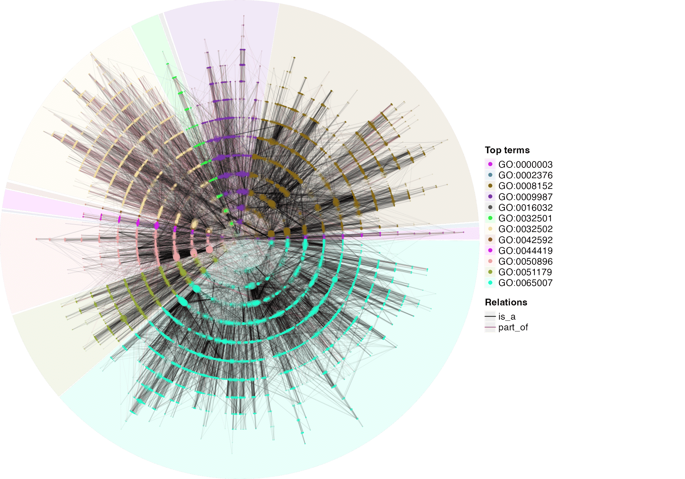
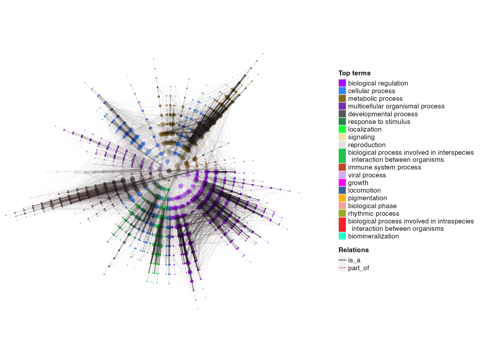
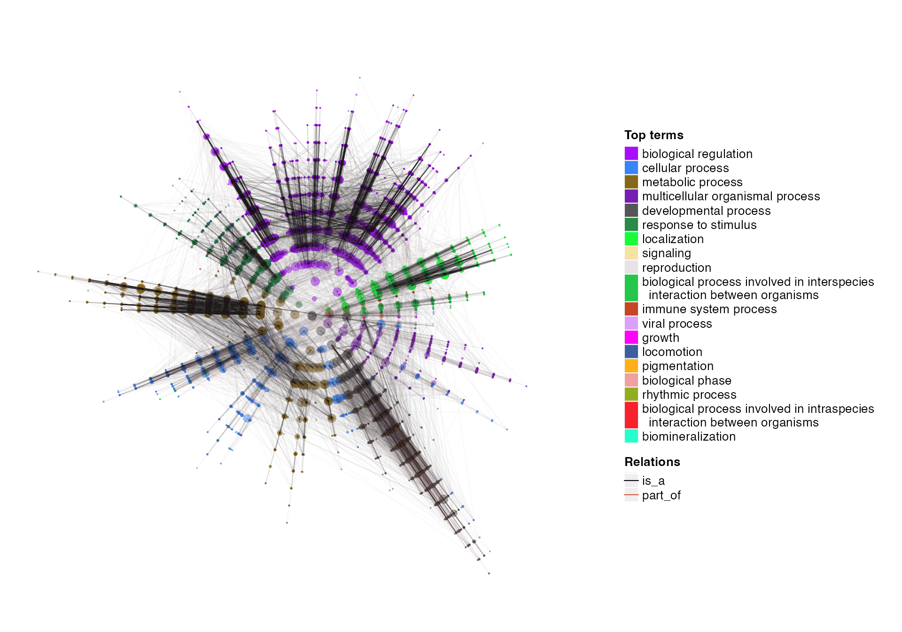

vignettes/v7_dag_visualization.Rmd
v7_dag_visualization.RmdThere are two functions for visualizing DAGs. dag_graphviz() uses the DiagrammeR package to visualize small DAGs as HTML widgets. dag_circular_viz() uses a circular layout for huge DAGs.
library(simona)
parents = c("a", "a", "b", "b", "c", "d")
children = c("b", "c", "c", "d", "e", "f")
dag_small = create_ontology_DAG(parents, children)
dag_graphviz(dag_small)There are several graphical parameters for controlling nodes in the DAG.
color = sample(colors(), 6)
shape = c("polygon", "box", "oval", "egg", "diamond", "parallelogram")
dag_graphviz(dag_small, color = color, shape = shape)The DOT code can be obtained with dag_as_DOT():
dag_as_DOT(dag_small, color = color, shape = shape) |> cat()## digraph {
## graph [overlap = true]
##
## node [fontname=Helvetical]
## "a" [color="slategray4", style="solid", shape="polygon", fontsize=10, fontcolor="black"];
## "b" [color="plum2", style="solid", shape="box", fontsize=10, fontcolor="black"];
## "c" [color="lightcyan3", style="solid", shape="oval", fontsize=10, fontcolor="black"];
## "d" [color="grey78", style="solid", shape="egg", fontsize=10, fontcolor="black"];
## "e" [color="darkorange3", style="solid", shape="diamond", fontsize=10, fontcolor="black"];
## "f" [color="violetred4", style="solid", shape="parallelogram", fontsize=10, fontcolor="black"];
##
## edge [dir="back"]
## "a" -> "b";
## "a" -> "c";
## "b" -> "c";
## "b" -> "d";
## "c" -> "e";
## "d" -> "f";
## }Following is an example of visualizing all upstream terms of a GO term. Note dag[, "GO:0010228"] returns a sub-DAG of all upstream terms of GO:0010228.
dag = create_ontology_DAG_from_GO_db()
dag_graphviz(dag[, "GO:0010228"])Edge attributes should be set as a named vector where names correspond to all relation types.
dag_graphviz(dag[, "GO:0010228"],
edge_color = c("is_a" = "purple", "part_of" = "darkgreen"),
edge_style = c("is_a" = "solid", "part_of" = "dashed"), width = 800, height = 800)Visualizing huge DAGs is not an easy job because a term can have more than one parents. Here the dag_circular_viz() uses a circular layout to visualize huge DAGs.
dag_circular_viz(dag)
In the circular layout, each circle correspond to a specific depth (maximal distance to root). On each circle, each term has a width (or a sector on the circle) associated where offspring terms are only drawn within that section. The width is proportional to the number of offspring terms of the term. Dot size corresponds to the number of child terms. If colors are not set, let’s say root term is on level 0, the DAG is cut at level-0 terms (links between level-1 terms and level-0 terms are all cut), and each sub-DAG is assigned with a different color. A legend of top terms of sub-DAGs is also added in the plot.
The term IDs are not informative in the plot. If there are additional information of terms stored in the meta data frame of the DAG object, the column name can be set with the legend_labels_from argument.
Especially for the GO DAG, we can observe that there are many links connecting sub-DAGs. To reduce such disturbance from cross-DAG links, on different levels of terms, we can reorder their child terms so that sub-DAGs are places closer to each other if there exist a large number of cross-DAG links. Normally, such reordering on child terms should be not applied too deep in the DAG because the effect of deeper terms are very subtile. In the following example, the reordering is only applied untile level 3.
The reordering is applied as follows, Denote a term \(x\) has several child terms, and \(t_i\), \(t_j\) are its two child terms. Denote \(\mathcal{D}^+_i\) and \(\mathcal{D}^+_j\) are the sets of \(t_i\) and \(t_j\)’s offspring terms including \(t_i\), \(t_j\) themselves. First calculate the number of links denoted as \(k_{i,j}\) connecting terms in \(\mathcal{D}^+_i\) and \(\mathcal{D}^+_j\).
\[ k_{i,j} = \sum_{a \in \mathcal{D}^+_i, b \in \mathcal{D}^+_j}{I(\mathrm{pa}(a, b))} \]
where \(I(\mathrm{pa}(a, b)) = 1\) when \(a\) is a parent of \(b\), or \(b\) is a parent of \(a\), or else \(I(\mathrm{pa}(a, b)) = 0\).
Next convert to a distance measure:
\[ d_{i,j} = \lambda_\mathrm{edge} - k_{i,j} \]
where \(\lambda_\mathrm{edge}\) is the total number of edges in the DAG. In this way, \(d_{i,j}\) is a non-negative value and measures the closeness of two terms with regards to how close the two sub-DAGs are. Finally, with the distance matrix of all child terms, TSP (travel salesman problem) is applied to reorder the child terms.
dag_circular_viz(dag, reorder_level = 3, legend_labels_from = "name")
Or you can do reordering explicitly:
dag = reorder(dag, reorder_level = 3)
dag_circular_viz(dag, legend_labels_from = "name")One useful application is to map GO terms of interest (e.g. significant GO terms from function enrichment analysis) to the DAG. In the following example, sig_go_ids contains 249 significant GO terms from an enrichment analysis.
sig_go_ids = readRDS(system.file("extdata", "sig_go_ids.rds", package = "simona"))
dag_circular_viz(dag, highlight = sig_go_ids, reorder_level = 3,
legend_labels_from = "name")
## R version 4.2.0 (2022-04-22)
## Platform: x86_64-apple-darwin17.0 (64-bit)
## Running under: macOS Big Sur/Monterey 10.16
##
## Matrix products: default
## BLAS: /Library/Frameworks/R.framework/Versions/4.2/Resources/lib/libRblas.0.dylib
## LAPACK: /Library/Frameworks/R.framework/Versions/4.2/Resources/lib/libRlapack.dylib
##
## locale:
## [1] C/UTF-8/C/C/C/C
##
## attached base packages:
## [1] stats graphics grDevices utils datasets methods base
##
## other attached packages:
## [1] simona_0.99.0
##
## loaded via a namespace (and not attached):
## [1] Biobase_2.58.0 httr_1.4.6 sass_0.4.7
## [4] bit64_4.0.5 jsonlite_1.8.7 foreach_1.5.2
## [7] bslib_0.5.0 highr_0.10 stats4_4.2.0
## [10] blob_1.2.4 GenomeInfoDbData_1.2.9 yaml_2.3.7
## [13] RSQLite_2.3.1 glue_1.6.2 digest_0.6.33
## [16] RColorBrewer_1.1-3 XVector_0.38.0 colorspace_2.1-0
## [19] htmltools_0.5.5 pkgconfig_2.0.3 GetoptLong_1.1.0
## [22] DiagrammeR_1.0.10 zlibbioc_1.44.0 purrr_1.0.1
## [25] GO.db_3.16.0 KEGGREST_1.38.0 IRanges_2.32.0
## [28] ellipsis_0.3.2 cachem_1.0.8 BiocGenerics_0.44.0
## [31] cli_3.6.1 magrittr_2.0.3 crayon_1.5.2
## [34] memoise_2.0.1 evaluate_0.21 fs_1.6.2
## [37] doParallel_1.0.17 xml2_1.3.5 textshaping_0.3.6
## [40] tools_4.2.0 GlobalOptions_0.1.2 lifecycle_1.0.3
## [43] matrixStats_1.0.0 ComplexHeatmap_2.15.4 stringr_1.5.0
## [46] S4Vectors_0.36.2 cluster_2.1.4 AnnotationDbi_1.60.2
## [49] Biostrings_2.66.0 compiler_4.2.0 pkgdown_2.0.7
## [52] jquerylib_0.1.4 GenomeInfoDb_1.34.9 systemfonts_1.0.4
## [55] rlang_1.1.1 grid_4.2.0 RCurl_1.98-1.12
## [58] iterators_1.0.14 rstudioapi_0.15.0 rjson_0.2.21
## [61] htmlwidgets_1.6.2 visNetwork_2.1.2 circlize_0.4.16
## [64] igraph_1.5.0 bitops_1.0-7 rmarkdown_2.23
## [67] codetools_0.2-19 DBI_1.1.3 TSP_1.2-4
## [70] R6_2.5.1 knitr_1.43 fastmap_1.1.1
## [73] bit_4.0.5 clue_0.3-64 rprojroot_2.0.3
## [76] ragg_1.2.5 shape_1.4.6 desc_1.4.2
## [79] stringi_1.7.12 Polychrome_1.5.1 parallel_4.2.0
## [82] Rcpp_1.0.11 vctrs_0.6.3 png_0.1-8
## [85] scatterplot3d_0.3-44 xfun_0.39